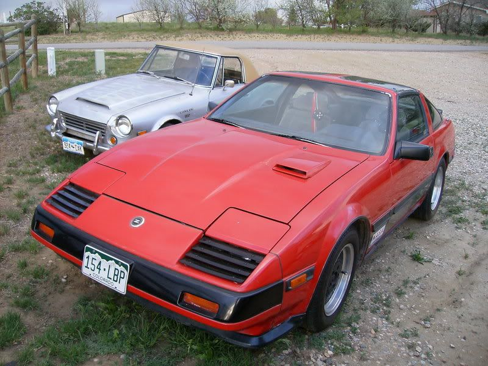
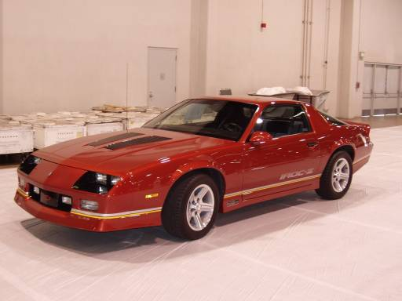

-
Simple & clean is where its at, and zenki/chukis pull it off perfectly....koukis look like too much of an afterthought.- VG30DET (HE341) 86 300ZX - 1982 280ZX Turbo - Headered NA 1986 300ZX 2+2 - 2000 Xterra - -
That's funny, I feel that same way. I'm not into plastic bumper strips or lumpy taillights.Zoey - 1987 Z31T GLL - HKS EVC / CM SS 3" turbo-back / Stance GR+
Black Betty - 2014 Audi C7 S6 APR1 -
If I see a hood propped up like that AE I am gonna sit on it.Elitist Prick Black Z owner.
1986 300zx Turbo
2011 Ford F150 Super Crew 4x2 EcoBOOST
1985 Toyota 4Runner, locked, lifted, geared, uglied.

-
Been thinking of a vent on the front bumper to bring some cold air in for the intake.
Been looking on ebay last night, and I've found the trans am 87 vent are pretty much what I'm looking for.
What do you guys think? Way better looking than most of the aftermarket vent I've seen & available for cheap.
I would put only one and the 'driver side' of the bumper.
That with a shaved license plate would make my kouki look good, thought?

''And at the end of the day you have a Mitsubishi. It's like masturbating with your own tears.'' Neit86T -
'86 300ZXT GLL
'78 Datsun 280Z BP
'11 Saab 9-3 Aero XWD -
don't do it. although the vents are nice, any holes on the z31 front bumper (especially between the headlights) looks ridiculous, out of place, and tacky. I would get a spare hood and make a drop vent. That would get more air to flow through the entire front bumper and cool the car much better as well as look proper if you place and design it well. I'm only saying this because I'm pretty sure you have the skill to do it without screwing it up or making it ugly :-) But don't cut the bumper please.Z-31Turbo;321422 wrote: Been thinking of a vent on the front bumper to bring some cold air in for the intake.
Been looking on ebay last night, and I've found the trans am 87 vent are pretty much what I'm looking for.
What do you guys think? Way better looking than most of the aftermarket vent I've seen & available for cheap.
I would put only one and the 'driver side' of the bumper.
That with a shaved license plate would make my kouki look good, thought?
-
What about this? Not really between headlights though.Careless;321430 wrote: don't do it. although the vents are nice, any holes on the z31 front bumper (especially between the headlights) looks ridiculous, out of place, and tacky. I would get a spare hood and make a drop vent........But don't cut the bumper please.
-
Anything Proudear doesn't count.Feedback- viewtopic.php?f=18&t=19840

-
I suppose I'll post mine. +1 for louvered headlights? I think it totally makes the look of the Zenki:
"Understeer is when you hit the wall with the front of the car. Oversteer is when you hit the wall with the rear of the car. Horsepower is how fast you hit the wall. Torque is how far you take the wall with you…"
-'68 Datsun 1600 Roadster
Build Thread: http://community.ratsun.net/topic/21…-build-thread/
-'85 300zx Turbo
Build Thread: http://z31performance.com/showthread…)build-thread! -
I think any louvers look terrible IMO. They should have died with disco.
That reminds me, I'm surprised I haven't seen a z31 with blacked out HL area similar to the Camaro. It kind of creates the same effect.
sigpic -
Will you be my best friend? lolButter;321574 wrote: I think any louvers look terrible IMO. They should have died with disco.- VG30DET (HE341) 86 300ZX - 1982 280ZX Turbo - Headered NA 1986 300ZX 2+2 - 2000 Xterra - -
Not a fan of blacked out headlight buckets. Looks like someone gave it two black eyes. Too "done told ya twice" style.Butter;321574 wrote: I think any louvers look terrible IMO. They should have died with disco.
+1
Butter;321574 wrote: That reminds me, I'm surprised I haven't seen a z31 with blacked out HL area similar to the Camaro. It kind of creates the same effect.
http://www.motorgen.com/pic/data/500…Z28_IROC-Z.JPG'86 300ZXT GLL
'78 Datsun 280Z BP
'11 Saab 9-3 Aero XWD -
or maybe its a car that gets into street fights and can still look straight.Pace;321579 wrote: +1
Not a fan of blacked out headlight buckets. Looks like someone gave it two black eyes. Too "done told ya twice" style. -
What about the later 280ZX hood vents? I dig themButter;321574 wrote: I think any louvers look terrible IMO. They should have died with disco.

1985 Nissan 300ZX 2+2- My first Z, back in the family
1987 Nissan 300ZX Turbo RIP 4/87 - 4/28/2011
Under Construction: 1986 Nissan 300ZX NA2T Slicktop
Originally posted by Tempestas -
*head nod* Those do look pretty sweet!TearingRaven;321589 wrote: What about the later 280ZX hood vents? I dig them

1985 300ZX Turbo GLL ^Click for log^
Originally posted by nater86zx

{kind=link}
Copyright © 2006–. All rights reserved. Privacy Policy